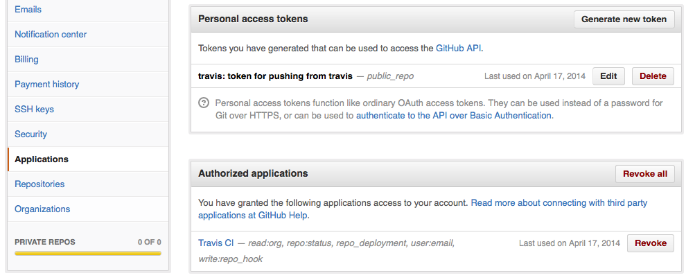
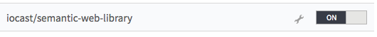

First of all check if you have already a personal access token.

If not, you can follow these instructions
On Travis we need to grant access to the GitHub repository. Login to Travis and in your account settings under repositories you can enable a project.

The next thing is to generate a new secure string for your .travis.yml file. First we need to get the GitHub personal access token, which you generated beforehand. Run the following command to get a list of all your access tokens.
curl -X GET -u <your_github_username> https://api.github.com/authorizations
You should get a JSON response which looks like this
...
{
"id": 1234567,
"url": "https://api.github.com/authorizations/1234567",
"app": {
"name": "travis: token for pushing from travis (API)",
"url": "http://developer.github.com/v3/oauth_authorizations/",
"client_id": "00000000000000000000"
},
"token": "1abc234d56efghi789",
"note": "travis: token for pushing from travis",
"note_url": null,
"created_at": "2014-01-01T12:00:00Z",
"updated_at": "2014-01-01T12:00:00Z",
"scopes": [
"public_repo"
]
},
...
So we are ready to generate the secure string for Travis. Be sure that you have installed travis rubygem using the following command gem install travis. Open a terminal and go to the folder where .travis.yml lays and add the secure string to it
cd /path/to/the/.travsi.yml/file
travis encrypt -r <user>/<repository> GH_TOKEN=<token> --add env.global
That’s all the magic. You are done and can push your changes to the GitHub repository which automatically deploys it on Travis CI.